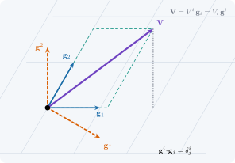
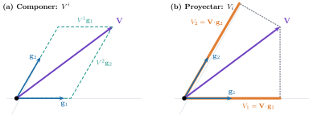
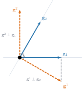

4 Bases covariantes y contravariantes
Dos maneras de describir un vector: componiendo o proyectando

Si los ejes no son perpendiculares ni miden lo mismo, ¿qué números describen un vector: cuántos pasos damos a lo largo de cada eje o cuánto «sombrea» el vector sobre cada eje
Objetivos y prerrequisitos
Objetivos. Al terminar el tema sabrás:
- distinguir las dos descomposiciones de un vector en una base no ortonormal: componiendo (\(V^i\)) y proyectando (\(V_i\));
- construir la base recíproca \(\{\mathbf{g}^i\}\) a partir de la base natural \(\{\mathbf{g}_i\}\) y comprobar \(\mathbf{g}^i\cdot\mathbf{g}_j=\delta^i_j\);
- calcular el tensor métrico \(g_{ij}\) y usarlo para subir y bajar índices;
- deducir cómo cambian bases y componentes al cambiar de coordenadas, y por qué se llaman contravariantes y covariantes;
- verificar todo ello con un ejemplo concreto (una placa oblicua) y con las coordenadas polares.
Prerrequisitos. Transformación de coordenadas y tensores y, de álgebra lineal, el producto escalar y la inversa de una matriz \(2\times2\).
Temas de la unidad
- Sección 4.1 · Dos preguntas sobre un mismo vector
- Sección 4.2 · La base recíproca
- Sección 4.3 · Componentes y tensor métrico: subir y bajar índices
- Sección 4.4 · Qué ocurre al cambiar de coordenadas
- Sección 4.5 y Sección 4.6 · Laboratorio interactivo y práctica guiada en Julia
NotaNotación y convenciones de este tema
| Símbolo | Significado |
|---|---|
| \(\mathbf{V}\) | vector (objeto geométrico, no depende de la base) |
| \(\mathbf{g}_i\) | base natural (covariante): vectores tangentes a las curvas coordenadas |
| \(\mathbf{g}^i\) | base recíproca (contravariante): \(\mathbf{g}^i\cdot\mathbf{g}_j=\delta^i_j\) |
| \(V^i\) | componentes contravariantes: \(\mathbf{V}=V^i\mathbf{g}_i\) |
| \(V_i\) | componentes covariantes: \(\mathbf{V}=V_i\mathbf{g}^i\), \(V_i=\mathbf{V}\cdot\mathbf{g}_i\) |
| \(g_{ij}\), \(g^{ij}\) | tensor métrico covariante y contravariante, \(g^{ij}g_{jk}=\delta^i_k\) |
Convenio de Einstein: un índice repetido, una vez arriba y otra abajo, indica suma. El índice de arriba no es un exponente: \(V^2\) es «la componente número 2», no \(V\cdot V\).
4.1 Dos preguntas sobre un mismo vector
En un sistema cartesiano ortonormal todo es sencillo: las componentes de un vector son a la vez «cuánto avanzo en cada eje» y «cuánto proyecta el vector sobre cada eje». Ambas ideas coinciden y por eso se confunden. Pero basta que los ejes no sean perpendiculares, o que no midan lo mismo, para que se separen en dos listas de números distintas.
Un ejemplo físico lo muestra enseguida. Una placa oblicua (un paralelogramo) tiene sus lados formando \(60^\circ\). Es natural elegir como ejes los propios lados: \[ \mathbf{g}_1=(1,\,0),\qquad \mathbf{g}_2=\Bigl(\tfrac12,\ \tfrac{\sqrt3}{2}\Bigr), \tag{4.1}\] dados en una base cartesiana ortonormal. Sea \(\mathbf{V}=(2,\ \tfrac32)\) un vector (por ejemplo, un desplazamiento) expresado en cartesianas. Hay dos preguntas razonables:
- Componer. ¿Cuántas veces hay que sumar \(\mathbf{g}_1\) y \(\mathbf{g}_2\) para obtener \(\mathbf{V}\)? Es decir, ¿qué \(V^1,V^2\) cumplen \(\mathbf{V}=V^1\mathbf{g}_1+V^2\mathbf{g}_2\)?
- Proyectar. ¿Cuánto vale el producto escalar de \(\mathbf{V}\) con cada eje, \(V_1=\mathbf{V}\cdot\mathbf{g}_1\) y \(V_2=\mathbf{V}\cdot\mathbf{g}_2\)?

Geometria.
Ejemplo 4.1 (Ejemplo resuelto: componer y proyectar en la placa oblicua) Componer. Se resuelve \(V^1\mathbf{g}_1+V^2\mathbf{g}_2=\mathbf{V}\) por coordenadas: \[ \begin{cases} V^1+\tfrac12V^2=2\\[2pt] \tfrac{\sqrt3}{2}V^2=\tfrac32 \end{cases} \ \Longrightarrow\ V^2=\sqrt3\approx1{,}732,\qquad V^1=2-\tfrac{\sqrt3}{2}\approx1{,}134 . \] Proyectar. \[ V_1=\mathbf{V}\cdot\mathbf{g}_1=2,\qquad V_2=\mathbf{V}\cdot\mathbf{g}_2=2\cdot\tfrac12+\tfrac32\cdot\tfrac{\sqrt3}{2}=1+\tfrac{3\sqrt3}{4}\approx2{,}299 . \] Cuatro números distintos, \((1{,}134;\,1{,}732)\) y \((2;\,2{,}299)\), describen el mismo vector.
TipIdea clave
En una base no ortonormal hay dos descomposiciones de un mismo vector. Las componentes contravariantes \(V^i\) son los coeficientes de la combinación lineal (se obtienen componiendo). Las covariantes \(V_i\) son los productos escalares con la base (se obtienen proyectando). Solo coinciden si la base es ortonormal.
AdvertenciaDos puntos que suelen confundir
- El vector no es contravariante ni covariante; lo son sus componentes. \(\mathbf{V}\) es el mismo en ambos casos: lo que cambia es la lista de números.
- «Contravariante» no significa «contrario a \(\mathbf{V}\)», ni «covariante» «igual que \(\mathbf{V}\)». Los nombres vienen de cómo se transforman las componentes cuando se cambia la base (Sección 4.4).
Pon a prueba lo anterior. Los ejercicios se corrigen en tu navegador y no envían nada a ningún sitio.
Si la base \(\{\mathbf{g}_1,\mathbf{g}_2\}\) es ortonormal, ¿qué relación hay entre \(V^i\) y \(V_i\)?
- \(V_i=V^i/g_{ii}\) en cualquier base
- Son listas completamente distintas
- Son iguales: \(V_i=V^i\)
- \(V_i=-V^i\)
Si \(\mathbf{g}_i\cdot\mathbf{g}_j=\delta_{ij}\), entonces \(V_i=\mathbf{V}\cdot\mathbf{g}_i\) es también el coeficiente de \(\mathbf{g}_i\) en \(\mathbf{V}\), así que \(V_i=V^i\). Por eso en cartesianas no se distinguen.
En la placa oblicua de \(60^\circ\) del Ejemplo 4.1, calcula la componente contravariante \(V^1\).
Resuelve primero la segunda ecuación, que solo contiene \(V^2\).
\(V^2=\sqrt3\) y \(V^1=2-\sqrt3/2\approx1{,}134\).
Las componentes covariantes \(V_i\) son los coeficientes de la combinación \(\mathbf{V}=V_1\mathbf{g}_1+V_2\mathbf{g}_2\).
Falso. Los \(V_i\) son productos escalares. Son los coeficientes de \(\mathbf{V}\) respecto de la base recíproca: \(\mathbf{V}=V_i\mathbf{g}^i\) (Sección 4.2). En el ejemplo, \(V_1\mathbf{g}_1+V_2\mathbf{g}_2=(2+1{,}150,\ 1{,}991)\neq\mathbf{V}\).
4.2 La base recíproca
Para que \(V_i\) también sean coeficientes de una combinación lineal hace falta otra base. Primero fijamos la que ya tenemos.
Definición 4.1 (Base covariante natural) Sea \(\mathbf{r}(\theta^1,\dots,\theta^n)\) el vector de posición. La base covariante en un punto es \[ \mathbf{g}_i=\frac{\partial\mathbf{r}}{\partial\theta^i},\qquad i=1,\dots,n, \tag{4.2}\] supuesta linealmente independiente.
Definición 4.2 (Tensor métrico) Las componentes covariantes del tensor métrico son \(g_{ij}=\mathbf{g}_i\cdot\mathbf{g}_j\), y las contravariantes \(g^{ij}\) son los elementos de la matriz inversa: \(g^{ij}g_{jk}=\delta^i_k\).
Definición 4.3 (Base recíproca (contravariante)) La base recíproca \(\{\mathbf{g}^i\}\) está definida por la condición de reciprocidad \[ \mathbf{g}^i\cdot\mathbf{g}_j=\delta^i_j . \tag{4.3}\]
Proposición 4.1 (Construcción de la base recíproca) La base recíproca existe, es única y verifica \[ \mathbf{g}^i=g^{ij}\,\mathbf{g}_j,\qquad \mathbf{g}_i=g_{ij}\,\mathbf{g}^j,\qquad g^{ij}=\mathbf{g}^i\cdot\mathbf{g}^j . \tag{4.4}\]
NotaDemostración de Proposición 4.1
\((g_{ij})\) es la matriz de Gram de vectores linealmente independientes, luego es simétrica definida positiva y, por tanto, invertible; así \(g^{ij}\) existe.
Existencia. Sea \(\mathbf{g}^i:=g^{ik}\mathbf{g}_k\). Entonces \(\mathbf{g}^i\cdot\mathbf{g}_j=g^{ik}g_{kj}=\delta^i_j\), que es ecuación 4.3.
Unicidad. Como \(\{\mathbf{g}_k\}\) es base, cualquier solución se escribe \(\mathbf{g}^i=A^{ik}\mathbf{g}_k\). Imponer ecuación 4.3 da \(A^{ik}g_{kj}=\delta^i_j\), o sea \(A=(g_{ij})^{-1}\).
Fórmulas restantes. \(\mathbf{g}^i\cdot\mathbf{g}^j=g^{ik}\,\mathbf{g}_k\cdot\mathbf{g}^j=g^{ik}\delta_k^j=g^{ij}\). Multiplicando \(\mathbf{g}^j=g^{jk}\mathbf{g}_k\) por \(g_{ij}\) y usando \(g_{ij}g^{jk}=\delta_i^k\) se obtiene \(\mathbf{g}_i=g_{ij}\mathbf{g}^j\). \(\blacksquare\)
La condición ecuación 4.3 tiene una lectura geométrica sencilla (Figura 4.2): \(\mathbf{g}^1\) es perpendicular a \(\mathbf{g}_2\) (porque \(\mathbf{g}^1\cdot\mathbf{g}_2=0\)) y su longitud se ajusta para que \(\mathbf{g}^1\cdot\mathbf{g}_1=1\); análogamente \(\mathbf{g}^2\perp\mathbf{g}_1\). Las construcciones con \(g^{ij}\) son las habituales en los textos de cálculo tensorial (Lebedev y Cloud 2003; Heinbockel 1996).

Ejemplo 4.2 (Ejemplo resuelto: la base recíproca de la placa oblicua) La métrica es \[ (g_{ij})=\begin{pmatrix}\mathbf{g}_1\!\cdot\!\mathbf{g}_1&\mathbf{g}_1\!\cdot\!\mathbf{g}_2\\ \mathbf{g}_2\!\cdot\!\mathbf{g}_1&\mathbf{g}_2\!\cdot\!\mathbf{g}_2\end{pmatrix} =\begin{pmatrix}1&\tfrac12\\[2pt] \tfrac12&1\end{pmatrix},\qquad \det(g_{ij})=\tfrac34,\qquad (g^{ij})=\tfrac43\begin{pmatrix}1&-\tfrac12\\[2pt] -\tfrac12&1\end{pmatrix}. \] Con ecuación 4.4: \[ \mathbf{g}^1=g^{11}\mathbf{g}_1+g^{12}\mathbf{g}_2=\tfrac43\mathbf{g}_1-\tfrac23\mathbf{g}_2=\Bigl(1,\,-\tfrac1{\sqrt3}\Bigr),\qquad \mathbf{g}^2=g^{21}\mathbf{g}_1+g^{22}\mathbf{g}_2=\tfrac43\mathbf{g}_2-\tfrac23\mathbf{g}_1=\Bigl(0,\,\tfrac2{\sqrt3}\Bigr). \] Comprobación de ecuación 4.3: \(\mathbf{g}^1\cdot\mathbf{g}_1=1\), \(\mathbf{g}^1\cdot\mathbf{g}_2=\tfrac12-\tfrac1{\sqrt3}\tfrac{\sqrt3}{2}=0\), \(\mathbf{g}^2\cdot\mathbf{g}_1=0\) y \(\mathbf{g}^2\cdot\mathbf{g}_2=\tfrac{2}{\sqrt3}\tfrac{\sqrt3}{2}=1\).
Observa que \(\|\mathbf{g}^1\|=\sqrt{1+\tfrac13}=\tfrac{2}{\sqrt3}\approx1{,}155>1=\|\mathbf{g}_1\|\): al cerrarse el ángulo entre los ejes, los recíprocos se alargan (\(\|\mathbf{g}^1\|=1/\operatorname{sen}\varphi\) cuando \(\|\mathbf{g}_i\|=1\)).
AdvertenciaErrores frecuentes
- \(\mathbf{g}^1\) no es \(\mathbf{g}_1/\|\mathbf{g}_1\|^2\) ni «el inverso de \(\mathbf{g}_1\)» (un vector no tiene inverso). Solo coincide con \(\mathbf{g}_1\) cuando la base es ortonormal.
- \(\mathbf{g}^1\) no es paralelo a \(\mathbf{g}_1\): es perpendicular a \(\mathbf{g}_2\).
- No confundir \(\mathbf{g}^2\) (segundo vector recíproco) con «\(\mathbf{g}\) al cuadrado».
Pon a prueba lo anterior.
Para la placa oblicua del Ejemplo 4.1, calcula \(g_{12}=\mathbf{g}_1\cdot\mathbf{g}_2\).
\(g_{12}=1\cdot\tfrac12+0\cdot\tfrac{\sqrt3}{2}=\tfrac12=\cos60^\circ\), porque \(\|\mathbf{g}_1\|=\|\mathbf{g}_2\|=1\).
¿Cuánto mide el primer vector recíproco \(\|\mathbf{g}^1\|\) de la placa oblicua?
\(\mathbf{g}^1=(1,-1/\sqrt3)\), o bien usa \(\|\mathbf{g}^1\|^2=g^{11}\).
\(\|\mathbf{g}^1\|^2=g^{11}=\tfrac43\), luego \(\|\mathbf{g}^1\|=2/\sqrt3\approx1{,}1547\).
En una base oblicua, \(\mathbf{g}^1\) es paralelo a \(\mathbf{g}_1\).
Falso. \(\mathbf{g}^1\perp\mathbf{g}_2\); solo es paralelo a \(\mathbf{g}_1\) si \(\mathbf{g}_1\perp\mathbf{g}_2\) (base ortogonal).
4.3 Componentes y tensor métrico: subir y bajar índices
Ya podemos formalizar las dos descomposiciones del Ejemplo 4.1.
Proposición 4.2 (Componentes de un vector) Todo vector admite dos descomposiciones, \[ \mathbf{V}=V^i\,\mathbf{g}_i=V_i\,\mathbf{g}^i, \tag{4.5}\] con \[ V^i=\mathbf{V}\cdot\mathbf{g}^i,\qquad V_i=\mathbf{V}\cdot\mathbf{g}_i,\qquad V_i=g_{ij}V^j,\qquad V^i=g^{ij}V_j, \tag{4.6}\] y la norma cumple \(\|\mathbf{V}\|^2=g_{ij}V^iV^j=V^iV_i\).
NotaDemostración de Proposición 4.2
Al ser \(\{\mathbf{g}_i\}\) base, \(\mathbf{V}=V^j\mathbf{g}_j\). Multiplicando por \(\mathbf{g}^i\) y usando ecuación 4.3, \(V^i=\mathbf{V}\cdot\mathbf{g}^i\). Análogamente, como \(\{\mathbf{g}^i\}\) también es base (por Proposición 4.1), \(\mathbf{V}=V_j\mathbf{g}^j\) y \(V_i=\mathbf{V}\cdot\mathbf{g}_i\). Entonces \(V_i=\mathbf{V}\cdot\mathbf{g}_i=V^j\,\mathbf{g}_j\cdot\mathbf{g}_i=g_{ij}V^j\), y de modo simétrico \(V^i=g^{ij}V_j\). Finalmente \(\|\mathbf{V}\|^2=\mathbf{V}\cdot\mathbf{V}=V^i\,\mathbf{g}_i\cdot V^j\mathbf{g}_j=g_{ij}V^iV^j=V^iV_i\). \(\blacksquare\)
El tensor métrico es, por tanto, el «conversor» entre las dos listas: \(g_{ij}\) baja el índice y \(g^{ij}\) lo sube.
Ejemplo 4.3 (Ejemplo resuelto: subir y bajar índices en la placa oblicua) Con \(V^1=2-\tfrac{\sqrt3}{2}\approx1{,}134\), \(V^2=\sqrt3\approx1{,}732\) y \((g_{ij})\) del Ejemplo 4.2: \[ V_1=g_{11}V^1+g_{12}V^2=1{,}134+\tfrac12\cdot1{,}732=2{,}000,\qquad V_2=g_{21}V^1+g_{22}V^2=\tfrac12\cdot1{,}134+1{,}732=2{,}299 , \] que coinciden con los productos escalares calculados directamente en el Ejemplo 4.1. Y la norma: \[ V^iV_i=1{,}134\cdot2{,}000+1{,}732\cdot2{,}299=6{,}25=2^2+\bigl(\tfrac32\bigr)^2=\|\mathbf{V}\|^2 . \]
Pon a prueba lo anterior.
Calcula la componente covariante \(V_2=\mathbf{V}\cdot\mathbf{g}_2\) del vector \(\mathbf{V}=(2,\,3/2)\) en la placa oblicua.
\(V_2=2\cdot\tfrac12+\tfrac32\cdot\tfrac{\sqrt3}{2}=1+\tfrac{3\sqrt3}{4}\approx2{,}299\).
¿Cuál de estas cantidades no cambia si se cambia de base (es un escalar invariante)?
- \(V^1\)
- \(V^iV_i\)
- \(V_2\)
- \(g_{12}\)
\(V^iV_i=\|\mathbf{V}\|^2\) es la longitud al cuadrado del vector y no depende de la base. \(V^1\), \(V_2\) y \(g_{12}\) sí cambian con ella.
4.4 Qué ocurre al cambiar de coordenadas
Las bases naturales dependen de las coordenadas. ¿Cómo cambian al pasar de unas \(\theta^i\) a otras \(\theta'^i\)?
Proposición 4.3 (Cambio de coordenadas) Si \(\theta'^i=\theta'^i(\theta^1,\dots,\theta^n)\) es un cambio de coordenadas regular, entonces \[ \mathbf{g}'_i=\frac{\partial\theta^j}{\partial\theta'^i}\,\mathbf{g}_j,\qquad \mathbf{g}'^i=\frac{\partial\theta'^i}{\partial\theta^j}\,\mathbf{g}^j,\qquad V'^i=\frac{\partial\theta'^i}{\partial\theta^j}\,V^j . \tag{4.7}\]
NotaDemostración de Proposición 4.3
Por la regla de la cadena, \(\mathbf{g}'_i=\partial\mathbf{r}/\partial\theta'^i=(\partial\theta^j/\partial\theta'^i)\,\partial\mathbf{r}/\partial\theta^j\). Sea \(J^i_j=\partial\theta'^i/\partial\theta^j\) y \(\tilde J^j_i=\partial\theta^j/\partial\theta'^i\); son matrices inversas entre sí. Definiendo \(\mathbf{g}'^i:=J^i_j\mathbf{g}^j\) se tiene \(\mathbf{g}'^i\cdot\mathbf{g}'_k=J^i_j\tilde J^l_k\,\delta^j_l=J^i_j\tilde J^j_k=\delta^i_k\), así que es la base recíproca (por unicidad). Como \(\mathbf{V}\) no depende de la base, \(V'^i=\mathbf{V}\cdot\mathbf{g}'^i=J^i_j\,\mathbf{V}\cdot\mathbf{g}^j=J^i_jV^j\). \(\blacksquare\)
Las componentes \(V^i\) se transforman como las diferenciales \(d\theta^i\) (con la matriz \(J\)) y la base \(\mathbf{g}_i\) como las derivadas \(\partial/\partial\theta^i\) (con la inversa): se mueven «en sentido contrario». De ahí los nombres: las componentes que contravarían respecto de la base son las \(V^i\), y las que covarían con ella, las \(V_i\). El vector \(\mathbf{V}\) no cambia.
Ejemplo 4.4 (Ejemplo resuelto: un vector constante en polares) Sea \(\mathbf{V}=(1,0)\) el mismo vector en todos los puntos del plano. Con coordenadas polares \((\theta^1,\theta^2)=(r,\theta)\), la base natural es \(\mathbf{g}_1=(\cos\theta,\operatorname{sen}\theta)\) y \(\mathbf{g}_2=r(-\operatorname{sen}\theta,\cos\theta)\) (ortogonal, con \(g_{11}=1\), \(g_{22}=r^2\)). En el punto \(r=2\), \(\theta=\pi/6\): \[ V^1=\mathbf{V}\cdot\mathbf{g}^1=\cos\theta=0{,}866,\qquad V^2=\mathbf{V}\cdot\mathbf{g}^2=-\frac{\operatorname{sen}\theta}{r}=-0{,}25, \] \[ V_2=\mathbf{V}\cdot\mathbf{g}_2=-r\operatorname{sen}\theta=-1,\qquad V_2=g_{22}V^2=4\cdot(-0{,}25)=-1\ \checkmark \] (usando \(\mathbf{g}^2=\mathbf{g}_2/r^2\), que sale de ecuación 4.4 con \(g^{22}=1/r^2\)). Aunque \(\mathbf{V}\) es constante, sus componentes polares varían de punto a punto: es el origen de los símbolos de Christoffel (Sección 6.2).
Pon a prueba lo anterior.
En coordenadas polares, en el punto \(r=2\), \(\theta=\pi/6\), ¿cuánto vale la componente contravariante \(V^\theta\) del vector constante \(\mathbf{V}=(1,0)\)?
\(V^\theta=\mathbf{V}\cdot\mathbf{g}^2\) con \(\mathbf{g}^2=\mathbf{g}_2/r^2\) y \(\mathbf{g}_2=r(-\operatorname{sen}\theta,\cos\theta)\).
\(V^\theta=\dfrac{\mathbf{V}\cdot\mathbf{g}_2}{r^2}=\dfrac{-r\operatorname{sen}\theta}{r^2}=-\dfrac{\operatorname{sen}\theta}{r}=-\dfrac{0{,}5}{2}=-0{,}25\).
En el mismo punto, ¿cuánto vale la componente covariante \(V_\theta=\mathbf{V}\cdot\mathbf{g}_2\)?
\(V_\theta=-r\operatorname{sen}\theta=-2\cdot0{,}5=-1\). Comprobación: \(g_{22}V^2=r^2V^\theta=4\cdot(-0{,}25)=-1\).
4.5 Laboratorio interactivo
Laboratorio · Bases covariante y contravariante en el plano
calculado en el navegador Verificado frente a Julia (web/tests/bases.test.mjs).
Se fija una base oblicua \(\{\mathbf{g}_1,\mathbf{g}_2\}\) (azul) y se muestra su base recíproca (naranja, discontinua). Qué observar:
- \(\mathbf{g}^1\perp\mathbf{g}_2\) y \(\mathbf{g}^2\perp\mathbf{g}_1\) para cualquier ángulo y cualquier longitud.
- Con ángulo \(90^\circ\) y longitudes 1, ambas bases coinciden y también \(V^i=V_i\) (compruébalo en la tabla).
- Al cerrar el ángulo (\(\to0^\circ\) o \(\to180^\circ\)) los recíprocos se alargan: \(\|\mathbf{g}^i\|=1/(\|\mathbf{g}_i\|\operatorname{sen}\varphi)\), y \(\det(g_{ij})\to0\).
- Los valores iniciales (\(60^\circ\), \(|\mathbf{g}_1|=|\mathbf{g}_2|=1\), \(\mathbf{V}=(2;\,1{,}5)\)) son los de la placa del Ejemplo 4.1: comprueba en la tabla \(V^i\), \(V_i\) y \(g_{ij}\).
4.6 Práctica guiada en Julia
TipEjemplo computacional
calculado Primero, la placa oblicua de \(60^\circ\) (Ejemplo 4.1, Ejemplo 4.2 y Ejemplo 4.3) con el paquete Geometria; después, una base con coeficientes racionales para ver que la reciprocidad es exactamente la identidad.
using Geometria, LinearAlgebra
B = [1.0 0.5; 0.0 sqrt(3)/2] # columnas: g₁ = (1,0), g₂ = (1/2, √3/2)
V = [2.0, 1.5]
(g = metrica(B), # [1 0.5; 0.5 1]
gr1 = base_reciproca(B)[:, 1], # (1, −1/√3)
gr2 = base_reciproca(B)[:, 2], # (0, 2/√3)
Vup = comps_contravariantes(B, V), # (1.134, 1.732)
Vdn = comps_covariantes(B, V), # (2, 2.299)
norma = dot(comps_contravariantes(B, V), comps_covariantes(B, V)) ≈ dot(V, V))(g = [1.0 0.5; 0.5 0.9999999999999999], gr1 = [1.0, -0.5773502691896258], gr2 = [0.0, 1.1547005383792517], Vup = [1.1339745962155612, 1.7320508075688776], Vdn = [2.0, 2.299038105676658], norma = true)# Aritmética exacta con racionales: g₁ = (2,0), g₂ = (1,3), V = (5,4)
Br = [2//1 1//1; 0//1 3//1]
Vr = [5//1, 4//1]
g = metrica(Br)
Vup = comps_contravariantes(Br, Vr)
Vdn = comps_covariantes(Br, Vr)
(; g, reciprocidad = reciprocidad(Br), Vup, Vdn,
bajar = Vdn == g * Vup, # V_i = g_ij V^j
norma = dot(Vup, Vdn) == dot(Vr, Vr)) # |V|² = Vⁱ Vᵢ(g = Rational{Int64}[4 2; 2 10], reciprocidad = Rational{Int64}[1 0; 0 1], Vup = Rational{Int64}[11//6, 4//3], Vdn = Rational{Int64}[10, 17], bajar = true, norma = true)Las mismas identidades se comprueban de forma automática en julia/test/runtests.jl (conjuntos «Bases covariantes y contravariantes» y «Base oblicua a 60°») y, para el código JavaScript del laboratorio, en web/tests/bases.test.mjs. Las respuestas numéricas de los ejercicios de este tema se verifican con scripts/verificar_ejercicios.jl.
4.7 Ejercicios
Determinante. Demuestra que \(\det(g_{ij})=(\det B)^2\) si \(B\) es la matriz de columnas \(\mathbf{g}_i\).
NotaSolución\(g_{ij}=\mathbf{g}_i\cdot\mathbf{g}_j\) es \(B^{\mathsf T}B\) (matriz de Gram), luego \(\det(g_{ij})=\det(B^{\mathsf T})\det B=(\det B)^2\). En la placa oblicua, \(\det B=\tfrac{\sqrt3}{2}\) y \((\det B)^2=\tfrac34\), que coincide con el Ejemplo 4.2.
Ángulo variable. Para dos vectores unitarios que forman un ángulo \(\varphi\), calcula \(g^{11}\) y \(\|\mathbf{g}^1\|\). Comprueba el resultado para \(\varphi=60^\circ\).
NotaSolución\(g_{ij}=\begin{pmatrix}1&\cos\varphi\\\cos\varphi&1\end{pmatrix}\), \(\det=\operatorname{sen}^2\varphi\), \(g^{11}=1/\operatorname{sen}^2\varphi\), luego \(\|\mathbf{g}^1\|=1/\operatorname{sen}\varphi\). Para \(60^\circ\): \(2/\sqrt3\approx1{,}155\) ✓.
Polares. En coordenadas polares demuestra que \(\mathbf{g}^2=\mathbf{g}_2/r^2\) y que \(V^\theta=V_\theta/r^2\).
NotaSoluciónLa métrica es \(\operatorname{diag}(1,r^2)\), luego \(g^{22}=1/r^2\) y \(\mathbf{g}^2=g^{22}\mathbf{g}_2=\mathbf{g}_2/r^2\) (ecuación 4.4). Entonces \(V^\theta=g^{22}V_\theta=V_\theta/r^2\).
Invariancia. Prueba que \(V^iW_i\) no depende de la base, usando ecuación 4.7 y la matriz inversa.
NotaSoluciónCon \(V'^i=J^i_jV^j\) y \(W'_i=\tilde J^k_iW_k\): \(V'^iW'_i=J^i_j\tilde J^k_iV^jW_k=\delta^k_jV^jW_k=V^jW_j\), porque \(\tilde J=J^{-1}\).
Con Julia. Con
Geometria, calcula \(V^i\), \(V_i\) y \(\|\mathbf{V}\|^2\) de \(\mathbf{V}=(1,1)\) en la base \(\mathbf{g}_1=(1,0)\), \(\mathbf{g}_2=(\cos45^\circ,\operatorname{sen}45^\circ)\) y comprueba \(V_i=g_{ij}V^j\).NotaSoluciónB = [1 cosd(45); 0 sind(45)]; V = [1.0, 1.0];comps_contravariantes(B, V)da \((1-\cot45^\circ\cdot1,\ 1/\operatorname{sen}45^\circ)=(0;\,1{,}414)\),comps_covariantes(B, V)da \((1;\,1{,}414)\) y \(V^iV_i=2=\|\mathbf{V}\|^2\).
La doy por superada si…
- Distingo, para un mismo vector, las componentes contravariantes (coeficientes de la combinación) y las covariantes (productos escalares).
- Construyo la base recíproca a partir de \(g_{ij}\) y compruebo \(\mathbf{g}^i\cdot\mathbf{g}_j=\delta^i_j\).
- Sé que \(\mathbf{g}^1\perp\mathbf{g}_2\) y que los recíprocos se alargan cuando se cierra el ángulo entre los ejes.
- Subo y bajo índices con \(g^{ij}\) y \(g_{ij}\) y reconozco \(V^iV_i\) como la norma al cuadrado.
- Explico por qué se llaman contravariantes y covariantes a partir de ecuación 4.7.
- Sé que un vector constante tiene componentes polares variables, y que esto motiva los símbolos de Christoffel.
NotaFuentes, correcciones y qué queda pendiente
Fuentes. Texto autónomo, escrito a partir de resultados estándar de cálculo tensorial (Lebedev y Cloud 2003; Heinbockel 1996; Spiegel 1959; Struik 1955). El ejemplo de la placa oblicua de \(60^\circ\) y el del vector constante en polares se han calculado y comprobado con Geometria (tests citados arriba). Las notas históricas se apoyan en fuentes secundarias enlazadas en cada caja.
Qué queda pendiente.
- Las figuras de este tema (TikZ, geometría exacta) tienen revisión visual humana pendiente.
- Las referencias de la bibliografía no se han leído línea a línea para este tema; los comentarios indican solo el tipo de apoyo.
- El laboratorio se ha comprobado frente a Julia (
npm test), pero no se ha revisado su comportamiento en todos los navegadores ni en móvil.
Struik, D. J. 1955. Geometría Diferencial Clásica. Aguilar.
Spiegel, M. R. 1959. Vector Analysis and an Introduction to Tensor Analysis. Schaum’s Outlines.
Heinbockel, J. H. 1996. Introduction to Tensor Calculus and Continuum Mechanics. Department of Mathematics; Statistics, Old Dominion University.
Lebedev, L. P., y M. J. Cloud. 2003. Tensor Analysis. World Scientific.
Referencias
Son las mismas que aparecen en el margen, junto al texto.
Heinbockel, J. H. 1996. Introduction to Tensor Calculus and Continuum Mechanics. Department of Mathematics; Statistics, Old Dominion University.
Lebedev, L. P., y M. J. Cloud. 2003. Tensor Analysis. World Scientific.
Spiegel, M. R. 1959. Vector Analysis and an Introduction to Tensor Analysis. Schaum’s Outlines.
Struik, D. J. 1955. Geometría Diferencial Clásica. Aguilar.